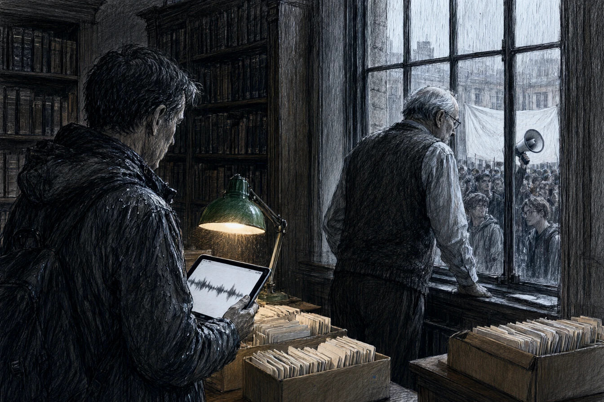

Dans son bureau du deuxième étage du palais universitaire, dont les hautes fenêtres donnaient sur les marronniers de la place de l'Université, le professeur Adrien Fischer rangeait ses fiches bristol dans de petits cartons à chaussures. À soixante-deux ans, Fischer avait le dos voûté des médiévistes et une voix de gorge qui n'avait jamais eu besoin d'amplificateur dans l'amphithéâtre Pasteur.
En bas, sous le porche de grès des Vosges, une trentaine d'étudiants scandaient des slogans devant une banderole de drap blanc tendue entre deux colonnes ioniques. Un mégaphone crachait un refrain métallique.
Thomas Kientz entra sans frapper, le col de sa veste mouillé par l'averse. À vingt-huit ans, ancien thésard de Fischer devenu rédacteur pour une feuille associative, Thomas avait encore le zèle inquiet des disciples.
« Le conseil de faculté est réuni dans l'aile droite, monsieur le professeur. Le doyen s'apprête à signer votre suspension conservatoire. »
Fischer ne leva pas les yeux de son carton.
« Le doyen signe ce qu'on lui tend pour que les cours d'anglais des affaires reprennent lundi. Asseyez-vous, Kientz. L'agitation use le cœur. »
Thomas posa sa tablette tactile sur la table de travail, entre deux dictionnaires de moyen haut-allemand. L'écran affichait une salve de messages reprenant le même extrait sonore de vingt secondes, capté lors d'un séminaire d'épistémologie et monté en boucle avec une sirène d'alarme.
« Quatre cent mille partages en quarante-huit heures, dit Thomas. Ils ont tronqué votre phrase sur la dialectique des foules pour en faire une apologie du totalitarisme de marché. Les trois quarts des comptes qui relayent ont été ouverts mardi matin. »
Fischer posa une boîte d'agrafes sur le carton.
« Les foules ont toujours aimé le bois flotté, mon garçon. Elles prennent ce qui dérive au fil du courant et en font une torche. Quand la cour sera balayée, ils passeront au professeur de botanique. »
* * *
La nuit suivante, dans son studio de la Krutenau où s'entassaient les câbles et les disques durs externes, Thomas décortiquait les flux du réseau.
La vague d'indignation ne partait ni du syndicat étudiant ni des amphis strasbourgeois. Les deux cents premiers comptes relais partageaient une racine de serveur domiciliée en banlieue de Karlsruhe, administrée par une filiale de communication de crise sous contrat cadre avec OmniCorp Data Solutions.
Le script de dissémination était d'une rigueur mathématique. À chaque réaction indignée d'un élu local ou d'un responsable d'association, le réseau d'amplification injectait une salve de commentaires modérés, simulant une pluralité d'usagers révoltés. Parmi les nœuds de redirection figurait un fichier d'archives log baptisé Schattenspiel, le même protocole que le journaliste Brand avait mentionné deux mois plus tôt dans son enquête sur les écoutes d'OmniData.
Une fenêtre de messagerie sécurisée s'ouvrit d'un coup sec au centre de son moniteur. L'expéditeur était identifié par une marque sans contour, un simple œil stylisé gravé dans un rectangle de pixels noirs.
Un message court s'afficha, caractère par caractère : « Fischer n'est pas la cible. La cible est la chaire de sociologie cognitive. OmniCorp finance le laboratoire de substitution dès janvier. Vérifiez la convention tripartite. G.S. »
Thomas tenta de tracer l'adresse source. Le paquet rebondit sur trois serveurs relais à Francfort, Bâle et Rotterdam avant de s'éteindre sur une adresse inexistante.
* * *
Le lundi matin, Thomas attendit le doyen de la faculté de sciences humaines, Christian Vesper, sous la colonnade du rectorat. Vesper, attaché-case en cuir fauve à la main, marchait d'un pas pressé vers la commission de discipline.
« Monsieur le doyen, une minute. »
Vesper s'arrêta, l'air contrarié, en ajustant son écharpe de cachemire.
« Kientz, vous perdez votre temps. La décision est prise en accord avec le ministère. Nous ne pouvons pas tolérer que le désordre s'installe devant les amphithéâtres pour une querelle de vocabulaire. « Ce n'est pas une querelle, monsieur Vesper. C'est un débauchage algorithmique. L'agence de réputation qui a financé la campagne de diffamation émarge au budget marketing d'OmniCorp. » « Et alors ? » coupa le doyen, les yeux fuyants vers la porte vitrée. »
Il s'approcha de Thomas, le ton soudain plus bas, confidentiel et dur.
« Vous croyez que l'université fonctionne avec les droits d'inscription de six cents boursiers ? OmniCorp dote une fondation de recherche à hauteur de deux millions d'euros pour la rentrée prochaine. La condition posée par le conseil d'administration était simple : une sociologie prédictive, tournée vers l'analyse des comportements d'achat et la paix sociale. Fischer refusait de remplir les fiches d'évaluation par compétences depuis dix ans. Il était déjà mort, Kientz. Nous n'avons fait que signer l'acte de sépulture. »
Le doyen tourna les talons et franchit le sas automatique. La porte de verre se referma dans un sifflement pneumatique.
* * *
À la mi-décembre, une pluie grasse collait les dernières feuilles mortes sur les pavés du Neudorf. Dans son pavillon aux volets clos, Adrien Fischer recevait Thomas dans une petite véranda encombrée de géraniums en hivernage.
Sur la table basse, une théière de fonte tiédissait entre deux tasses d'émail ébréché. Fischer versait le thé d'une main ferme, sans une goutte sur la toile cirée.
« Le rectorat a validé la convention, dit Thomas en posant le fac-similé du contrat sur le guéridon. Le nouveau titulaire de la chaire arrive de Berlin. Il a publié un manuel de modélisation des flux d'adhésion chez OmniCorp Éditions. « C'est dans l'ordre des choses, répondit Fischer avec un sourire paisible. L'époque veut des ingénieurs du consentement ; on leur donne des ingénieurs du consentement. » « Vous ne voulez pas déposer un recours devant le tribunal administratif ? Les preuves de manipulation sont irréfutables. » « Pour obtenir quoi, Kientz ? Deux ans de procédure, une réintégration dans un bureau sans fenêtre au sous-sol et trois collègues qui traversent la rue pour ne pas me serrer la main à la cantine ? » »
Fischer se leva, prit un sécateur posé sur l'étagère et coupa net une tige noircie sur un pot d'hibiscus.
« J'ai six cartons de notes sur la peste à Colmar au dix-septième siècle qui dorment dans mon grenier depuis ma thèse. Pour la première fois depuis quarante ans, personne ne me demande de remplir un tableau de bord. Buvez votre thé, mon garçon. Il va refroidir. »
Thomas regarda le vieux professeur tailler la plante avec méthode. Dehors, sur la chaussée mouillée, le camion-benne de la métropole ramassait les ordures dans le fracas mat des conteneurs en plastique.